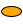
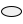
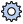
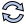
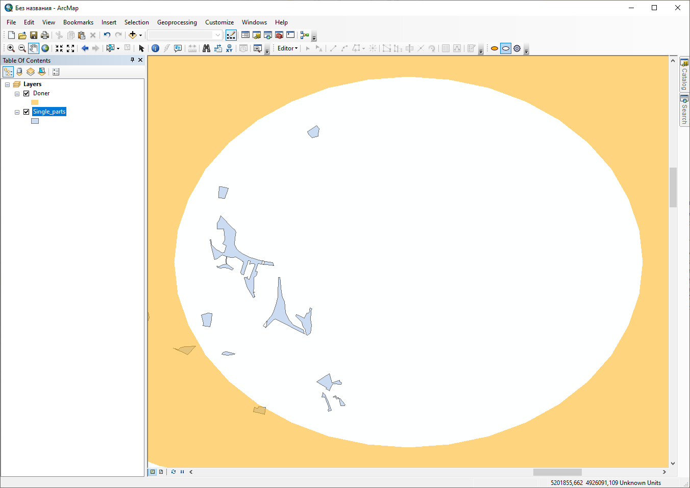
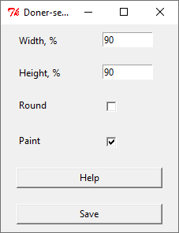
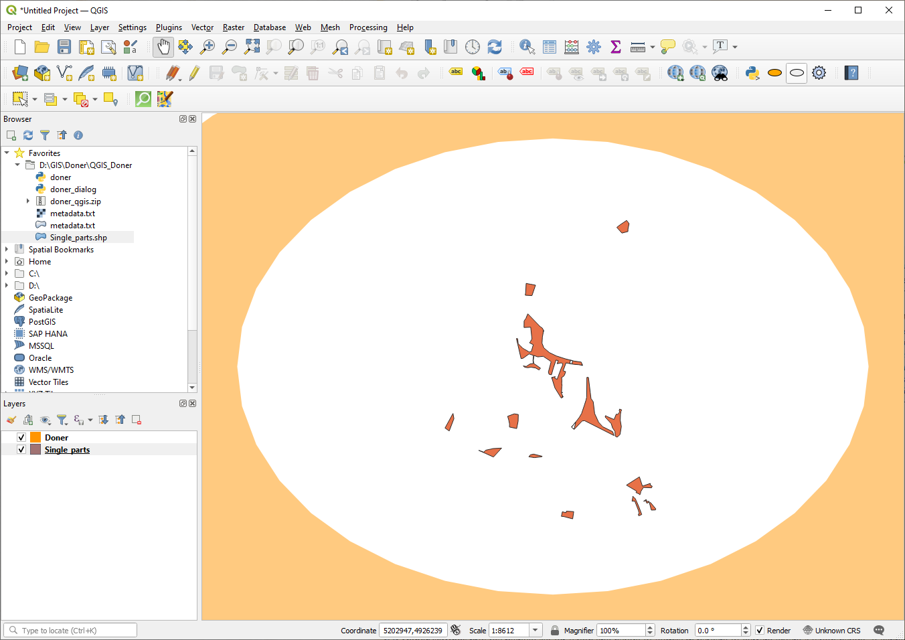
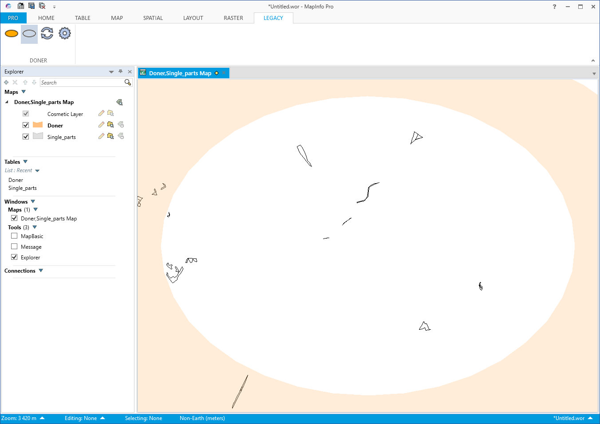
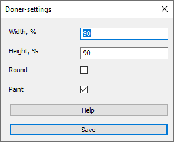

Донер – это плагин, созданный преимущественно для картографов с целью облегчить их работу. На сегодняшний день он поддерживается тремя ГИС-приложениями: ArcGIS, QGIS и MapInfo. Основная функция плагина – добавить окрашенную зону на карту, когда процесс цифровки/занесения или проверки атрибутов и геометрии окончен для определенной территории. Впоследствии пользователю не придется просматривать данную область еще раз.
В плагине имеются три кнопки (в версии для MapInfo - четыре, ниже имеется объяснение):
 Add doner – добавить эллипс на текущий охват карты
 Cut doner – вырезать эллипсом существующую геометрию слоя Doner
 Settings – окно настроек, в котором пользователь может настроить ширину/высоту эллипса, включить/отключить форму круга и раскраски в полупрозрачный оранжевый цвет
 Set CRS (только для MapInfo) – установить текущую систему координат для определения плагином корректных числовых значений
Ссылки на скачивание плагина:
Все данные, которые создает плагин, расположены по пути C:\Users\%username%\Documents\mapDoner. После использования плагина создаются дополнительные папки по данному пути в зависимости от ГИС-приложения, которое Вы используете. Плагин создает два типа файлов: файл конфигурации плагина и слой Doner (*.shp для ArcGIS и QGIS, *.tab для MapInfo). Вам не требуется создавать ни папок, ни файлов, плагин делает это сам.
Закройте ArcMap/ArcCatalog и установите плагин двойным щелчком по файлу Doner.esriaddin. Установка из приложения может не произойти по причине возможного несоответствия версии разработки плагина и версии приложения
Откройте ArcMap. Если в окне программы не появились три кнопки плагина, пройдите по пути Customize – Customize Mode… и найдите в списке Donet toolbar. После установки флажка кнопки должны появиться
Загрузите слои в рабочую зону либо откройте проект с уже имеющимися слоями
Нажмите кнопку Add doner. Появится новый слой под названием Doner с уже имеющимся оранжевым овалом
Многократно нажимая кнопку Add doner в разных местах на карте, будет видно, как несколько эллипсов будут появляться и сразу объединяться в один объект в слое Doner.
Cut doner вырезает форму эллипса в существующем слое Doner, если с ним есть пересечение. Таким образом можно очистить весь слой и заново добавлять новые эллипсы.
Doner settings позволяет пользователю настроить ширину и высоту эллипса в процентах относительно ширины/высоты охвата рабочей области. Данные параметры не могут быть текстовыми, нулем или отрицательными числами, необходимо вписать числа от 0 до 100. Можно также ввести числа больше 100, но при этом эллипс будет выходить за рамки охвата карты. Также пользователь может установить флажок в пункте Round для того, чтобы получаемая фигура была в форме круга, диаметр которого регулируется только при помощи параметра высоты. Флажок Paint автоматически окрашивает слой Doner (полупрозрачная оранжевая заливка без границы).
После закрытия ArcMap шейп-файл слоя Doner будет расположен по пути C:\Users\%username%\Documents\mapDoner\arcgis_doner. Как только пользователь запустит ArcMap снова, при нажатии Add doner плагин продолжит использование данного слоя.
В окне QGIS откройте пункт меню Модули – Управление и установка модулей – Install from ZIP и укажите путь до файла doner.zip. Установите плагин
Если в окне программы не появились три кнопки плагина, проверьте флажок напротив плагина в меню Модули – Управление и установка модулей в панели Установленные
Загрузите слои в рабочую зону либо откройте проект с уже имеющимися слоями
Нажмите кнопку Add doner. Появится новый слой под названием Doner с уже имеющимся оранжевым овалом
Многократно нажимая кнопку Add doner в разных местах на карте, будет видно, как несколько эллипсов будут появляться и сразу объединяться в один объект в слое Doner.
Cut doner вырезает форму эллипса в существующем слое Doner, если с ним есть пересечение. Таким образом можно очистить весь слой и заново добавлять новые эллипсы.
Doner settings позволяет пользователю настроить ширину и высоту эллипса в процентах относительно ширины/высоты охвата рабочей области. Данные параметры не могут быть текстовыми, нулем или отрицательными числами, необходимо вписать числа от 0 до 100. Можно также ввести числа больше 100, но при этом эллипс будет выходить за рамки охвата карты. Также пользователь может установить флажок в пункте Round для того, чтобы получаемая фигура была в форме круга, диаметр которого регулируется только при помощи параметра высоты. Флажок Paint автоматически окрашивает слой Doner (полупрозрачная оранжевая заливка без границы).
После закрытия QGIS шейп-файл слоя Doner будет расположен по пути C:\Users\%username%\Documents\mapDoner\qgis_doner. Как только пользователь запустит QGIS снова, при нажатии Add doner плагин продолжит использование данного слоя.
В окне MapInfo откройте панель Главная – Инструменты – Настройки – Зарегистрировать программу и укажите путь до файла doner.mbx. Также для того, чтобы отображались иконки плагина, необходимо, чтобы файл библиотеки DonerData.dll
Если в окне программы во вкладке Инструменты не появились четыре кнопки плагина, зайдите в панель Главная – Инструменты и во вкладке Зарегистрировано найдите Doner, запустите его кликом по иконке Загрузить инструмент(Запуск)
Загрузите слои в рабочую зону либо откройте проект с уже имеющимися слоями
Нажмите кнопку Add doner. Появится новый слой под названием Doner с уже имеющимся оранжевым овалом
Многократно нажимая кнопку Add doner в разных местах на карте, будет видно, как несколько эллипсов будут появляться и сразу объединяться в один объект в слое Doner.
Cut doner вырезает форму эллипса в существующем слое Doner, если с ним есть пересечение. Таким образом можно очистить весь слой и заново добавлять новые эллипсы. Пользователь также может наблюдать весь процесс вырезания геометрии, в том числе выборки и установки редактируемых объектов. Это происходит из-за специфики языка MapBasic, который не может напрямую править геометрию слоя.
Set CRS – это специальная кнопка для установки уникальной системы координат и границ окна карты. Данная кнопка добавлена по двум причинам. Первая связана с языком MapBasic, а именно с ограничением функции MapperInfo. В соответствии с руководством MapBasic, "MapperInfo( ) не возвращает координат (например,. MINX, MAXX, MINY, MAXY) в единицах измерения, заданных на карте. Такие значения возвращаются либо в единицах внутренней координатной системы MapInfo Professional, действующей в рамках данного сеанса, либо в терминах координатной системы программы MapBasic, вызывающей данную функцию. Также, задание атрибута MAPPER_INFO_XYUNITS возвращает единицы, которые используются для показа положения указателя мыши на экране в строке состояний (устанавливается оператором Set Map Window Frontwindow)". Из-за этого плагин должен устанавливать систему координат для окна карты, что является причиной второй проблемы. MapInfo ограничивает количество уникальных систем координат 254 наименованиями во время непрерывной работы программы. Эта проблема ранее поднималась в обсуждениях и решения ей не было: изменения размера количества уникальных наименований или перезапись существующей проекции были недоступны. По этим причинам пришлось добавить дополнительную кнопку для одноразовой установки системы координат для плагина. Если необходимо добавить новую карту со слоем в другой проекции или сменить настройки проекта, нажатие кнопки установит новые границы и систему координат для работы плагина. После 253 уникальных настроек плагин выдаст предупреждение о превышении предельного числа уникальных систем координат и придется перезагрузить MapInfo.
Doner settings позволяет пользователю настроить ширину и высоту эллипса в процентах относительно ширины/высоты охвата рабочей области. Данные параметры не могут быть текстовыми, нулем или отрицательными числами, необходимо вписать числа от 0 до 100. Можно также ввести числа больше 100, но при этом эллипс будет выходить за рамки охвата карты. Также пользователь может установить флажок в пункте Round для того, чтобы получаемая фигура была в форме круга, диаметр которого регулируется только при помощи параметра высоты. Флажок Paint автоматически окрашивает слой Doner (полупрозрачная оранжевая заливка без границы).
После закрытия MapInfo файл-таблица *.tab слоя Doner будет расположен по пути C:\Users\%username%\Documents\mapDoner\mapinfo_doner. Как только пользователь запустит MapInfo снова, при нажатии Add doner плагин продолжит использование данного слоя.
Меня зовут Павел и я создатель данного плагина. Плагин распространяется бесплатно, но буду рад, если вы поддержите разработку или распространите информацию о ней. Пишите по любым вопросам, багам и предложениям на следующие адреса:
E-mail: pasha004@yandex.ru
Facebook: https://www.facebook.com/profile.php?id=100002056762317
Telegram: @PavelPereverzev